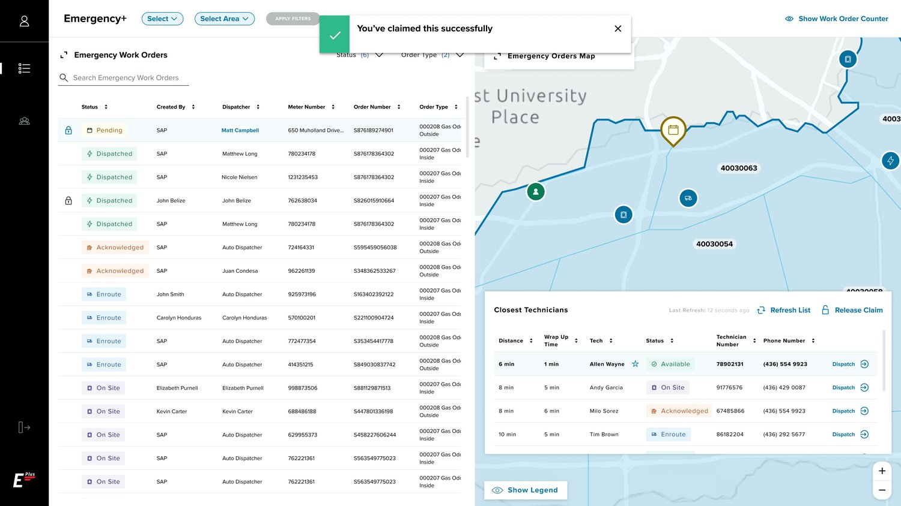
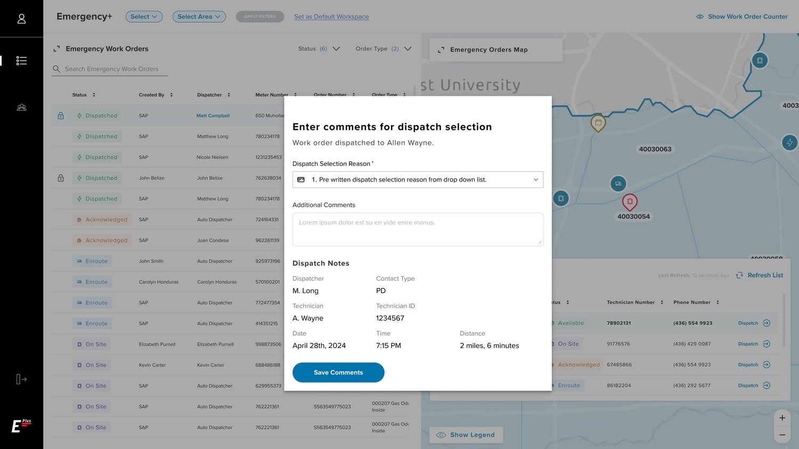
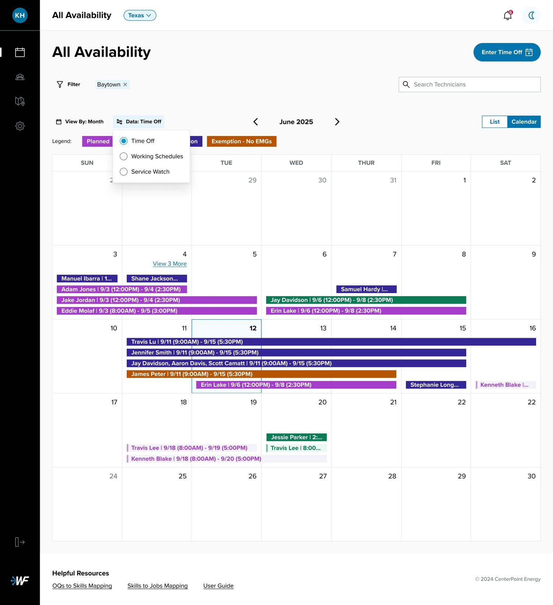
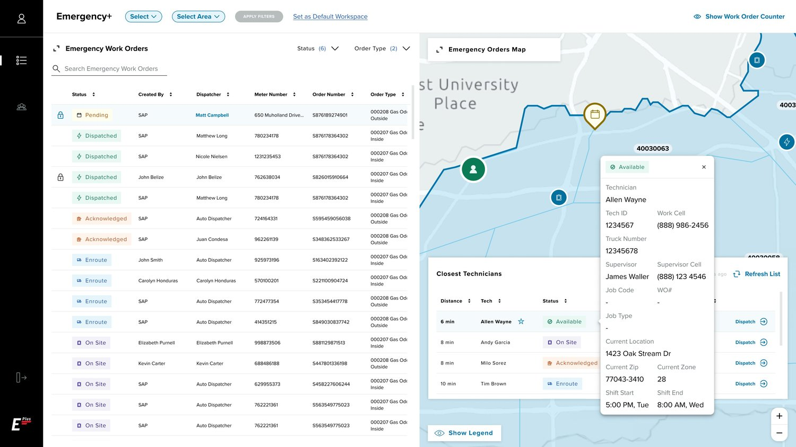
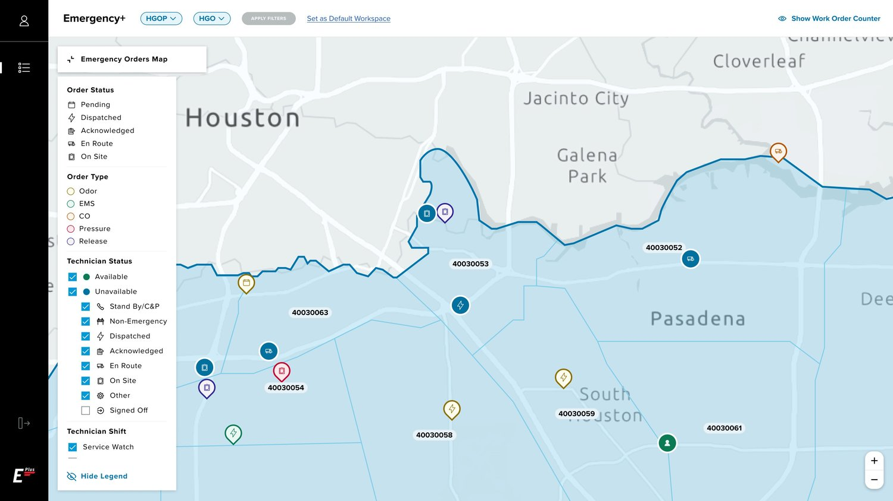
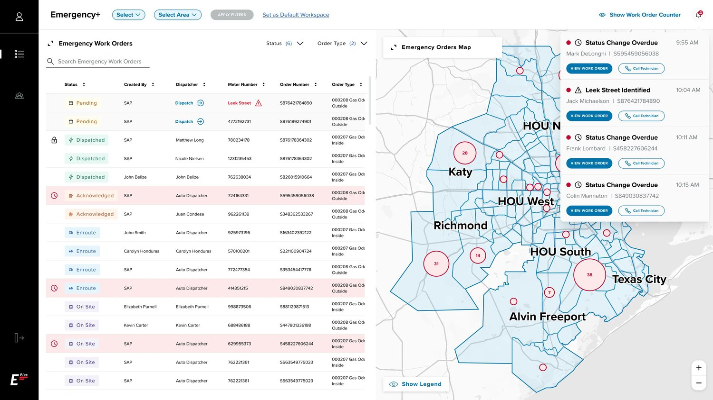

Emergency+ Dispatch Platform
A complete redesign of CenterPoint Energy’s emergency dispatch experience — consolidating 7 tools into 1, cutting response time from 20+ minutes to under 2, and deploying auto-dispatch that handles 80% of work orders.
From 20 minutes to under 2 — end to end
CenterPoint’s strategic safety goal is to cut total emergency response to under 20 minutes by 2030. This project tackled the first critical link: from receiving an emergency work order to dispatching a technician.
Call-center reps juggled 7+ disconnected tools with duplicate workflows, no historical tracking, and no automation. The legacy Dispatch Plus platform was aging, slow, and isolated.
Continuous development with end users
Design focused on reducing fragmentation, streamlining workflows, integrating broader data sources, and treating call-center reps as active collaborators — not passive testers.
- _01Reduce toolsCollapse 7+ tools into a single unified platform.
- _02Simplify workflowEliminate duplicate work and enable historical tracking.
- _03Automate dispatchIntroduce automated dispatching with full human controls.
- _04Modernize legacyBring the aging Dispatch Plus experience into the present.
Outcomes
- _01Under 2 min responseFrom 20+ minutes to under 2 minutes, order to dispatch.
- _0280%+ auto-dispatchAuto-Dispatch handles the majority of new orders, cutting rep workload.
- _03E+ platform launchedA modern web platform far more capable than legacy Dispatch Plus.
- _0435k+ orders improvedAn 83% improvement across 35,000+ work orders within 6 months.





